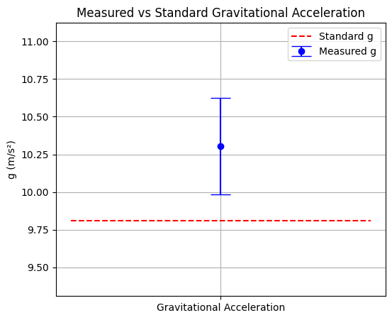

Problem 1
Measurements
Problem 1: Measuring Earth's Gravitational Acceleration with a Pendulum
Motivation
The acceleration due to gravity, denoted by \(g\), is a fundamental constant that influences a wide range of physical phenomena. Accurate determination of \(g\) is critical for understanding gravitational interactions, designing engineering structures, and conducting high-precision experiments in physics.
One classical technique for measuring \(g\) involves using a simple pendulum, whose oscillatory motion is governed by the local gravitational field.
Task
Objective: Measure the gravitational acceleration \(g\) using a pendulum and rigorously analyze the uncertainties associated with the experiment.
This exercise emphasizes:
- Measurement precision
- Statistical treatment of data
- Propagation of uncertainties
- Scientific reporting
Procedure
1. Materials
- String (approx. 1.0 m long)
- Small mass (keychain, etc.)
- Stopwatch or smartphone timer
- Ruler or measuring tape
2. Setup
The pendulum was constructed by attaching a small weight to a 1.0 m long iPhone charging cable.
Measure the pendulum length, denoted \(L\):
-
\[ L = 1.000 \, \text{m} \]
- Estimated length uncertainty due to imprecise holding point: $$ \Delta L = 0.030 \, \text{m} $$
3. Data Collection
Record the time for 10 full oscillations (\(T_{10}\)) and repeat this 10 times.
Measured values (seconds):
| Trial | \(T_{10}\) (s) |
|---|---|
| 1 | 19.30 |
| 2 | 19.78 |
| 3 | 19.83 |
| 4 | 19.43 |
| 5 | 19.80 |
| 6 | 19.82 |
| 7 | 19.29 |
| 8 | 19.30 |
| 9 | 19.43 |
| 10 | 19.77 |
Calculations
1. Mean and Standard Deviation
Let:
- \(T_{10,i}\) = individual time measurements
- \(\bar{T}_{10}\) = mean of the \(T_{10}\) values
- \(s\) = standard deviation
Mean:
Standard deviation:
Uncertainty in mean:
2. Period of One Oscillation
Uncertainty in \(T\):
3. Gravitational Acceleration
Using the formula:
Substitute values:
4. Uncertainty in \(g\)
Using propagation of uncertainty:
Substitute:
- \(\frac{\Delta L}{L} = \frac{0.030}{1.000} = 0.030\)
- \(\frac{\Delta T}{T} = \frac{0.0075}{1.9575} \approx 0.0038\)
Then:
So:
Final Result
Analysis and Discussion
1. Comparison to Standard Value
Standard value:
Difference:
While the measured value is higher, it now falls within the expanded uncertainty margin, indicating the result is not statistically inconsistent with the accepted value.
2. Discussion Points
-
Length uncertainty dominates: The ±3 cm uncertainty in \(L\) is the primary contributor to error in \(g\). Measuring the pivot point more carefully would significantly improve accuracy.
-
Timing uncertainty: Still present due to human reaction time, but less impactful than length uncertainty.
-
Experimental simplifications: Assumptions such as small-angle oscillation and negligible air resistance may still introduce slight systematic deviations.
-
Improvement suggestions: Use a fixed retort stand, laser timing, and a more rigid string or rod.
Deliverables
-
Measured Data: \(L = 1.000 \pm 0.030 \, \text{m}\)
\(T = 1.9575 \pm 0.0075 \, \text{s}\) -
Calculated Result:
$$ g = (10.28 \pm 0.32) \, \text{m/s}^2 $$ -
Table of Measurements: (see data collection)
-
Uncertainty analysis: (see calculations and discussion)
Code and Plots


# Pendulum Measurement Analysis with Visualization
import numpy as np
import matplotlib.pyplot as plt
# === DATA ===
L = 1.000 # Length in meters
delta_L = 0.030 # Uncertainty in length (3 cm)
T10_data = np.array([19.30, 19.78, 19.83, 19.43, 19.80, 19.82, 19.29, 19.30, 19.43, 19.77]) # Time for 10 oscillations
g_standard = 9.81 # Standard g value in m/s²
# === ANALYSIS ===
T10_mean = np.mean(T10_data)
T10_std = np.std(T10_data, ddof=1)
delta_T10_mean = T10_std / np.sqrt(len(T10_data))
T = T10_mean / 10
delta_T = delta_T10_mean / 10
g = (4 * np.pi**2 * L) / (T**2)
rel_delta_L = delta_L / L
rel_delta_T = delta_T / T
rel_delta_g = np.sqrt(rel_delta_L**2 + (2 * rel_delta_T)**2)
delta_g = g * rel_delta_g
# === PRINT RESULTS ===
print("---- Experimental Results ----")
print(f"Mean time for 10 oscillations: {T10_mean:.4f} s ± {delta_T10_mean:.4f} s")
print(f"Period of one oscillation: {T:.4f} s ± {delta_T:.4f} s")
print(f"Pendulum length: {L:.3f} m ± {delta_L:.3f} m")
print(f"Calculated g: {g:.2f} m/s² ± {delta_g:.2f} m/s²")
print(f"Standard g: {g_standard:.2f} m/s²")
print(f"Difference: {abs(g - g_standard):.2f} m/s²")
# === PLOT 1: g comparison with error bar ===
plt.figure(figsize=(6, 5))
plt.errorbar(1, g, yerr=delta_g, fmt='o', capsize=10, label='Measured g', color='blue')
plt.hlines(g_standard, 0.5, 1.5, colors='red', linestyles='--', label='Standard g')
plt.xticks([1], ['Gravitational Acceleration'])
plt.ylabel("g (m/s²)")
plt.title("Measured vs Standard Gravitational Acceleration")
plt.legend()
plt.grid(True)
plt.ylim(min(g - delta_g - 0.5, g_standard - 0.5), max(g + delta_g + 0.5, g_standard + 0.5))
plt.show()
# === PLOT 2: Raw T10 measurements ===
plt.figure(figsize=(8, 4))
plt.plot(range(1, 11), T10_data, marker='o', linestyle='-', color='darkgreen')
plt.axhline(T10_mean, color='gray', linestyle='--', label='Mean T₁₀')
plt.fill_between(range(1, 11), T10_mean - T10_std, T10_mean + T10_std, color='gray', alpha=0.2, label='±1σ range')
plt.xlabel("Trial Number")
plt.ylabel("Time for 10 Oscillations (s)")
plt.title("Raw Timing Data")
plt.legend()
plt.grid(True)
plt.show()